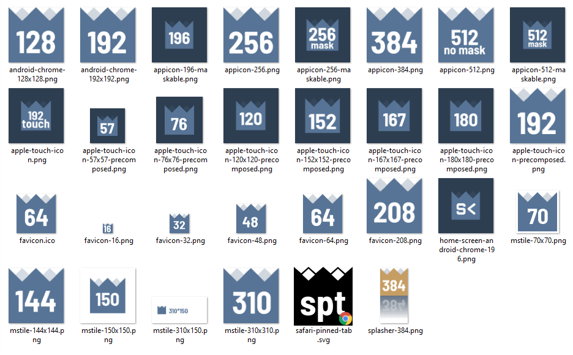
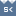
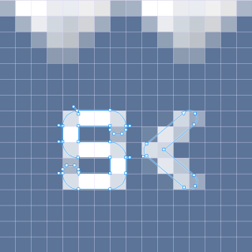
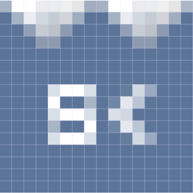

PWA Icons, manifest
& Favicon Issues
12/05/2021 -
Hello, I'm a French graphic designer & front-end web integrator.
Perfectly understand favicons and App icons behaviours is a nightmare. Lies everywhere, stuff that should work and doesn't, icons ignored, etc.
Consequently, I decided to create every (a lot) past and present recommended icons and directly inscribed the size value on them. The icons where all the same, except I wrote "16" on the 16px favicon, "32" on the 32px favicon, ... up to 512px. I loaded them in a nuxt/firebase project - the one you're reading now - with a pwa configuration. And I tested.
Some "nuxt generate" and "firebase deploy" later, I realized that a vast majority of them seemed useless. Designs, sizes and files supposed to help you control how your favicons & App icon look here and there, all of this, even following precise doc & user reco, it didn't work the way it was supposed to.
The pieces of information bellow are a compilation of links & notes.
Through final observations and a conclusion, you can directly jump to a summary of what I think every front-end guys should know.
At the end of this document, my head link declaration, and my manifest.
At the very end of this document some tips to create crisp favicons and App icons.
Menu
Mission 1 : How many favicons am I supposed to create ?Mission 2 : App IconsMission 3 : Windows & Ms TilesMission 4 : Testing & the manifest issueMission 5 : The apple-touch-icon issueTest resultsFinal ObservationsConclusionMy final nuxt.config.js concerning head, linkMy final manifest.jsonTips (favicon and App icon design)Links & doc
Read it or not
Github - Favicon ExplainedMicrosoftAbout PWA maskable iconsStackOverflow - Topic about Icon SizesAbout manifest updatesSafari web content Guide / Web AppTouch Icons Sizes et precomposed explanationsA (mostly) complete list of all the 7 known Favorite Icon Sizes (~year 2020)usefull tools
Splash Screens for iOs generator (no Iphone 12)favicon.ico generator containing multiple .png in one file.Mission 1 : How many favicons am I supposed to create ?
Mission 2 : App Icons
Should I Create the 128px, 192px, 256px, 384px and 512px App Icons ?
You may think that all that is declared in the manifest is app related ? If so, every icon sizes must have a purpose related to the App.
In 2021, on modern devices, the 192px icon seems to have only one purpose, and I'm almost certain that it's exactly the same as the android-chrome favicon we designed before.
It means that this icon must in fact be based on a favicon design, where the other icons have to be dedicated to the App and look like App icons.
Still, I had this test where I didn't have the 128px and 256px declared in the manifest. Chrome Android 7 chose the 192px as the main PWA Icon. I Added the 256px, that was designed as an App Icon. Gets ignored. I Added the 128px, and then, 192px get ignored. mmmh ... :)
The point of creating 128px, 256px, 384px icons is to target specific devices and resolutions. It MAY be interesting for some issues. See next point.
So, which icon will be chosen in the webmanifest ?
If there are multiple equally appropriate images in icons, a user agent MUST use the last one declared in order at the time that the user agent collected the list of icons. If the user agent tries to use an icon but that icon is determined, upon closer examination, to be inappropriate (e.g. because its content type is unsupported), then the user agent MUST try the next-most-appropriate icon as determined by examining the manifest image resource's members.
Source : somewhere on the web
Well ... the user agent surely must but doesn't really in the end, unless I don't understand what is LAST, MUST, and NEXT-MOST.
Another example is when the Chrome application tab in your console scans your manifest, and tells you which Icon is gonna be prioritized over the other. So much lies again. :D
Anyway, after a shit ton of tries (see test bellow), I investigated the maskable icon method : I tried it on 2 icons of 512px, one with "purpose": "maskable" that's gonna be used as the app icon, and one with no purpose (default: any), used for ... the splashscreen and in ... Microsoft Windows 10. Only these 2 icons were declared in the manifest for this test.
Concerning 128px, 256px and 384px icons : in android 7.0, on a Samsung Galaxy Tab S2, the maskable value didn't seem to work. But the icon IS masked in the end. So you may have to hack the system to have a App dedicated Icon that is gonna be masked, and prevent the system from choosing a favicon designed Icon. In this case, you should have a unique 256px icon that is gonna be used for the App icon and for the splasher. I came to that conclusion after realising that the 256px App icon will be chosen on your mobile phone too if declared, and the 384px icon will be chosen for your splasher. So, perfect 256px App icon for the Samsung Galaxy Tab and the Samsung A8, Perfect 384px splasher icon for the Samsung A8, and same 256px App icon used for splasher for the Samsung Galaxy Tab. Are you still here ?
Mission 3 : Windows & Ms Tiles
If your point was to have nice tiles in Windows 10 : your browserconfig.xml, your tiles declaration in the head, your specific 5 strange icon dimensions, everything will be completely ignored.
If you're not concerned with Windows Phone - And I could not find any friend having one - you can give up on the full browserconfig / IEconfig / mstiles icons stuff.
We are in 2021, I attempted every possible ways, but in the end, windows 10 takes the icon declared in the manifest. Doesn't look that bad in the end, but still. Was this supposed to work that way ? I'll gladly tak any advice concerning that matter.
What I did not attempted was to check if, when there's no manifest, windows gets the stuff done the way he was supposed to. But well, I need a manifest so ...
Mission 4 : Testing & the manifest issue
It's a nightmare to clear the cache on mobile and erase data for installed app. It's long and painful.
Let's say you installed a first version and are not content with the result : you fix your icons, upload it, and try to reinstall the App. Well, yeah. Android has kept in IDontKnowWhere the previous icon. You can try to clear the Chrome cache all you want, it will not have any effect.
Actually, to help your browser understand you changed things, you have to add a version key (e.g.: "?v=2") at the end of your declaration href. It doesn't work 100% of the time, but it works better than any other technic I came across.
{ rel: "manifest", href: "/manifest.json?v=2" }Will my installed PWA update my App Icons ?
When the PWA is launched, Chrome determines the last time the local manifest was checked for changes. If the manifest hasn't been checked in the last 24 hours, Chrome will schedule a network request for the manifest, then compare it against the local copy.
If select properties in the manifest have changed (see list below), Chrome queues the new manifest, and after all windows of the PWA have been closed, the device is plugged in, and connected to WiFi, Chrome requests an updated WebAPK from the server. Once updated, all fields from the new manifest are used.
Which properties will trigger an update?
background_color display orientation scope shortcuts start_url theme_color web_share_target If Chrome is unable to get an updated manifest from the server, it may increase the time between checks to 30 days.
Source : somewhere on the web
What you can conclude is :
Mission 5 : The apple-touch-icon issue
You're supposed to declare a list of apple-touch-icons in your head, dedicated to iOs Users and 4 types of device : Phone, Tablet, Phone Retina, Tablet Retina. Due to "pixel density" shitty concept, iOs will pick a ~60px based icon multiplied by 1, 2 or 3 (the pixel density factor), letting you understand why you have 57px(lol), 120px, 180px icons in the end. The principle is not the same on tablet tough ... ok.
Isn't the fun infinite ? Yes it is. Because, the best behaviour of all is that some browsers (Chrome, FF) tend to choose the 180px apple-touch-icon over any other. And you fool were sure that if there's apple in the name, it means that it's for Apple users ...
So, let's say you have a 192px favicon dedicated to your chrome android browser, it WILL get ignored on your mobile phone, but be chosen on your desktop.
HA HA HA. Kill me.
Someone suggested - in 2015 - to get rid of the size and type attributes, and pretended it worked like a charm ion iPad, Iphone, Firefox and Chrome. But, why ? What was the point of declaring sizes at the beginning ? Nope. Don't want to test it.
What I tried :
Ok, in the end the mess comes from the rel attribute "apple-touch-icon". That's it.
Thus, adding new apple-touch-icon will never be a problem, since Apple will never choose incorrect icons. And that's exactly what we can exploit. What we want is our 192px favicon to be chosen. From this objective and these realisations, we have 2 options :
Anticipated regrets
Let's be cool with it. Trying to have a perfect control on icons for every cases seems "almost" impossible.
In the end, I guess It would depend on complex JS that would, for instance, load a specific head according to the device/OS detection, etc.
So, let's try our best without JS, and find a good compromise.
Test Results
Icons tested
2021 - Windows 10
Browsers favicons - Firefox, Chrome, Edge
Firefox
Desktop install - Firefox, Chrome, Edge
2021 - Samsung A8 - Android 9
Browsers favicon - Firefox, Chrome, Native / No Apple-touch-icon declared in the Head
Browsers favicon - Firefox, Chrome, Native / Apple-touch-icons are declared in the Head - max size icon is 180px
Browsers favicon - Firefox, Chrome, Native / Apple-touch-icons are declared in the Head - max size icon is 192px
PWA - from Chrome
PWA - from Native Browser
2021 - Samsung Galaxy Tab S2 - Android 7
Browsers favicon
PWA - from Chrome
2021 - IOs 14.4.2 Mobile Devices (Ipad Air 2 / iPhone 12)
Safari Favicons
PWA
2021 - MacOs
Safari favicons
Final Observations
about classic favicons
about Ms Tiles
about PWA App icons
Conclusion
Only 2 designs are needed
12 files
Favicons : 2 files
Splashers based on favicon design : 2 files
App Icons : 7 files
Special : 1 file
Splashers
if you care about apple users
My final nuxt.config.js concerning head, link
link: [
/* Icons, Manifest */{rel: "apple-touch-icon", sizes: "120x120", href: "/apple-touch-icon-120x120-precomposed.png"}, /* iphone retina - previously 114 */{rel: "apple-touch-icon", sizes: "152x152", href: "/apple-touch-icon-152x152-precomposed.png"}, /* ipad Touch Icon - previously 144 */{rel: "apple-touch-icon", sizes: "167x167", href: "/apple-touch-icon-167x167-precomposed.png"}, /* iPad Retina Touch Icon - Since iOs10, 152 will be used */{rel: "apple-touch-icon", sizes: "180x180", href: "/apple-touch-icon-180x180-precomposed.png"}, /* iPhone Retina */{rel: "apple-touch-icon", sizes: "192x192", href: "/android/mobile-favicon-192.png"}, /* Retina Screens Trick*/{rel: "shortcut icon", sizes: "192x192", href: "/android/mobile-favicon-192.png"}, /* Favicons */{rel: "manifest", href: "/manifest.json"}, /* Manifest */{rel: "mask-icon", href: "/ios/safari-pinned-tab.svg", color: "#ffffff"},{rel: "shortcut icon", sizes: "16x16 32x32 64x64", href: "favicon.ico"}, /* Favicons */
/* iOs SplashScreen - FYA */{href: "/splashscreens/iphone5_splash.png", media: "(device-width: 320px) and (device-height: 568px) and (-webkit-device-pixel-ratio: 2) and (orientation: portrait)", rel: "apple-touch-startup-image"},{href: "/splashscreens/iphone6_splash.png", media: "(device-width: 375px) and (device-height: 667px) and (-webkit-device-pixel-ratio: 2) and (orientation: portrait)", rel: "apple-touch-startup-image"},{href: "/splashscreens/iphoneplus_splash.png", media: "(device-width: 621px) and (device-height: 1104px) and (-webkit-device-pixel-ratio: 3) and (orientation: portrait)", rel: "apple-touch-startup-image"},{href: "/splashscreens/iphonex_splash.png", media: "(device-width: 375px) and (device-height: 812px) and (-webkit-device-pixel-ratio: 3) and (orientation: portrait)", rel: "apple-touch-startup-image"},{href: "/splashscreens/iphonexr_splash.png", media: "(device-width: 414px) and (device-height: 896px) and (-webkit-device-pixel-ratio: 2) and (orientation: portrait)", rel: "apple-touch-startup-image"},{href: "/splashscreens/iphonexsmax_splash.png", media: "(device-width: 414px) and (device-height: 896px) and (-webkit-device-pixel-ratio: 3) and (orientation: portrait)", rel: "apple-touch-startup-image"},{href: "/splashscreens/iphone12_splash.png", media: "(device-width: 390px) and (device-height: 884px) and (-webkit-device-pixel-ratio: 3) and (orientation: portrait)", rel: "apple-touch-startup-image"},{href: "/splashscreens/iphone12max_splash.png", media: "(device-width: 428px) and (device-height: 926px) and (-webkit-device-pixel-ratio: 3) and (orientation: portrait)", rel: "apple-touch-startup-image"},{href: "/splashscreens/ipad_splash.png", media: "(device-width: 768px) and (device-height: 1024px) and (-webkit-device-pixel-ratio: 2) and (orientation: portrait)", rel: "apple-touch-startup-image"},{href: "/splashscreens/ipadpro1_splash.png", media: "(device-width: 834px) and (device-height: 1112px) and (-webkit-device-pixel-ratio: 2) and (orientation: portrait)", rel: "apple-touch-startup-image"},{href: "/splashscreens/ipadpro3_splash.png", media: "(device-width: 834px) and (device-height: 1194px) and (-webkit-device-pixel-ratio: 2) and (orientation: portrait)", rel: "apple-touch-startup-image"},{href: "/splashscreens/ipadpro2_splash.png", media: "(device-width: 1024px) and (device-height: 1366px) and (-webkit-device-pixel-ratio: 2) and (orientation: portrait)", rel: "apple-touch-startup-image"},],My final manifest.json
{"name": "Favikon","short_name": "Favikon","description": "My journey to the favicon & app icon hell","display": "standalone","orientation": "portrait","theme_color": "#2E3E51","background_color": "#2E3E51","start_url": "/","icons": [{"src": "android/mobile-favicon-192.png", "sizes": "192x192", "type": "image/png"},{"src": "appicons/appicon-maskable-128.png", "sizes": "128x128", "type": "image/png"},{"src": "appicons/appicon-maskable-256.png", "sizes": "256x256", "type": "image/png"},{"src": "appicons/appicon-splasher-384.png", "sizes": "384x384", "type": "image/png"},{"src": "appicons/appicon-splasher-512.png", "sizes": "512x512", "type": "image/png"},{"src": "appicons/appicon-maskable-512.png", "sizes": "512x512", "type": "image/png", "purpose": "maskable"}]}Tips
How to design the favicon ?
results from 16px base
<- 16pxprocess
Thoughts about pixels, svg and webfonts.
There's a bad understanding of how pixel works. Some think that a .svg, because it's a vector file, will help to have a perfect rendering. That's not it at all. Your base 16px icon has to be pixel perfect, be it exported as a .svg or a .png. And, when you scale it, you have to go by increment of 16px, otherwise, you will have partial pixel rendering.
That's the reason why you have 16px based icon, and 24px based icon.
The retina screens changed the game, but the principle remains the same. Pixel density is just a factor. It just means that, to display correctly a 16px icon on a retina screen, you have to load a 32px resource divided by 2. That's why mobile favicon will choose a 192px favicon and divide it by 12 for a 16px final perception, 6 for a 32px final perception or 4 for a 48px final perception, etc.
Note that Retina Screens have a much much better render anyway and can let you think that there are no issues with your icons. You have to keep in mind that most of desktop screens are not Retina ... :)